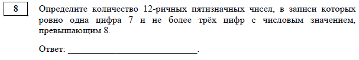
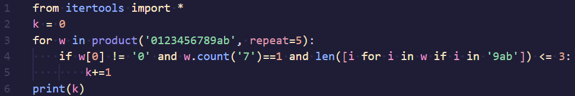
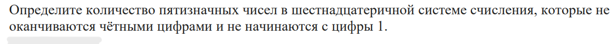

Общий алгоритм решения 8-го задания ЕГЭ по информатике:
1. Создать алфавит, из элементов которого будет состоять множество.
2. Ввести цикл и определить, какую функцию нужно использовать в задании. В зависимости от условий задачи можно применять permutations, product или combinations. Если порядок элементов важен, используют permutations или product, если нет — combinations. Для автоматизации перебора можно использовать встроенные в Python функции, например product() и permutations() из модуля itertools
3. Определить, какие последовательности подходят. Для отбора подходящих последовательностей можно использовать фильтрацию, чтобы избежать лишних вычислений.
4. Вывести количество последовательностей.
5. При решении подобных задач важно понимать такие термины, как алфавит сообщения, длина сообщения, мощность алфавита и объём информации.
Пример из ДЭМО-2025:

1. Вызываем встроенный модуль 'itertools' и импортируем его, from intertools import.
2. Так как нам нужно количество, то мы напишем переменную k=0, так как она будет счетчиком.
3. Начинаем перебирать с помощью цикла for. for w in product('0123456789ab', repeat=5):, в скобках записывает 12 чисел, так как числа 12-ричные, затем после запятой пишем repeat=5, так как числа пятизначные.
4. Начинаем перебирать и проверять уловия. Сначала нужно проверить, что первый символ не ноль w[0] != '0', затем проверяем одна ли цифра 7 в числе w.count('7')==1 и для того, чтобы проверить есть не более трех цифр с числовым значением, превышайщим 8(это 9,a,b), для этого мы созданим список в котором будем перебирать все цифры в нашем числе (w-кортеж) и проверять превышает ли цифра '9ab', если да то мы записывает число в список. Так как нам надо не более трех таких цифр, мы наш список мы помещаем в функцию len()<= 3.
5. Если число соответветствует условию, то к счетчику прибавляем один. k+=1
6. Выводим значение k.
7. Получаем ответ: 67476
Полный код этого задания будет выглядеть вот так:

Для лучшего усвоения материала можете решить данную задачу:
